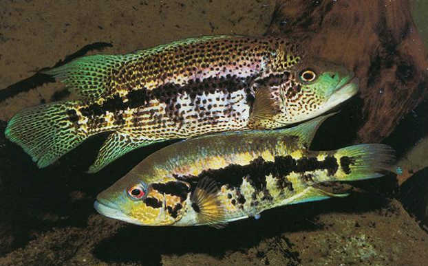
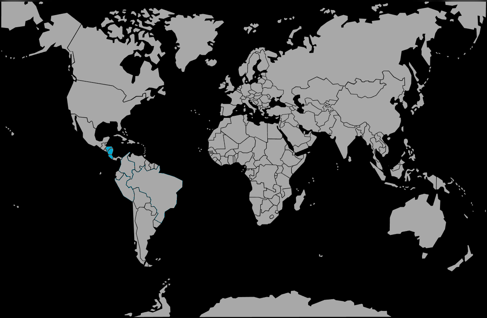

Systématique
- Ordre : Cichliformes
- Famille : Cichlidae
- Genre : Parachromis
- Espèce : P. dovii

Parachromis dovii est le géant des cichlidés d'Amérique centrale. C'est une espèce impressionnante, dotée d'un corps allongé et très musclé, d'une bouche immense et de dents caniniformes proéminentes.
Les mâles peuvent atteindre une taille record de 72 cm dans la nature, bien qu'ils mesurent plus souvent entre 50 et 60 cm en aquarium. Les femelles sont nettement plus petites, atteignant généralement 35 à 40 cm.
La coloration varie selon l'âge et le sexe. Les mâles adultes arborent souvent une robe dorée, verdâtre ou argentée avec de nombreux points noirs et des reflets bleutés ou violets, tandis que les femelles sont majoritairement jaunes avec une ligne latérale noire très marquée.
C'est un super-prédateur au sommet de la chaîne alimentaire dans son biotope. Son comportement est extrêmement territorial, agressif et intelligent.
En aquarium, il est réputé pour son intolérance. Il est généralement impossible de le maintenir en bac communautaire, sauf dans des installations publiques immenses (plusieurs milliers de litres). Pour un amateur, la maintenance en couple spécifique (seul dans le bac) est la seule option viable, et même là, le mâle peut devenir dangereux pour la femelle si l'espace est insuffisant.
Mode : ovipare (pondeur sur substrat découvert).
La reproduction est spectaculaire mais nécessite de grandes précautions en raison de la violence potentielle du mâle. La femelle pond plusieurs milliers d'œufs (parfois plus de 3000) sur une roche plate nettoyée.
Les deux parents participent activement à la garde. Ils défendent le nid avec une férocité absolue, n'hésitant pas à attaquer la main de l'aquariophile. Les alevins grandissent très vite.
Dimorphisme sexuel : Très marqué. Le mâle est beaucoup plus grand, plus massif, et possède une coloration plus complexe avec des reflets irisés. La femelle est plus petite et présente une coloration de fond jaune avec une bande noire horizontale bien définie.
Espérance de vie : Peut dépasser 15 ans, voire 20 ans dans des conditions optimales.
Il habite les lacs et les grands fleuves d'Amérique centrale (versants Atlantique et Pacifique). Il fréquente diverses profondeurs, des zones côtières peu profondes aux eaux plus libres, utilisant sa vitesse pour chasser d'autres poissons.
Répartition

Origine naturelle :
- Honduras (rivière Aguan).
- Nicaragua (Grands Lacs Nicaragua et Managua).
- Costa Rica (versants Atlantique et Pacifique).
Paramètres de maintenance
Température : 24 à 28 °C.
pH : 7,0 à 8,0.
GH : 10 à 25 °dGH (eau dure).
Courant : Modéré à fort, avec une filtration surdimensionnée indispensable (poisson très salissant).
Volume conseillé : Considérable. Un minimum absolu de 800 à 1000 L est requis pour un couple adulte, mais un volume de 1500 à 2000 L est préférable pour leur bien-être à long terme.
Régime alimentaire
Régime : piscivore strict (prédateur).
Dans la nature, il se nourrit presque exclusivement de poissons.
En aquarium, il accepte les gros granulés, les poissons entiers (éperlans, truites portions), les crevettes et les vers de terre.